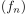
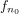
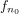
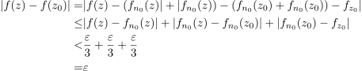

Stetigkeit vom Grenzwert einer gleichmäßig konvergenten Funktionenfolge
1. Satz
Sei  eine gleichmäßig konvergente Funktionenfolge mit Grenzwert
eine gleichmäßig konvergente Funktionenfolge mit Grenzwert  .
Falls fast alle in einem Punkt
.
Falls fast alle in einem Punkt  stetig sind, so ist auch stetig in
stetig sind, so ist auch stetig in
2. Beweis
Wegen der gleichmäßigen Konvergenz von  gilt:
Zu  , so dass gitl:
, so dass gitl:
 1
1
Für ein  gilt:
Weil nach Annahme  in stetig ist, gilt, dass für
gilt:
Weil nach Annahme  in stetig ist, gilt, dass für
 2
2
Somit folgt für 

3
also ist stetig in